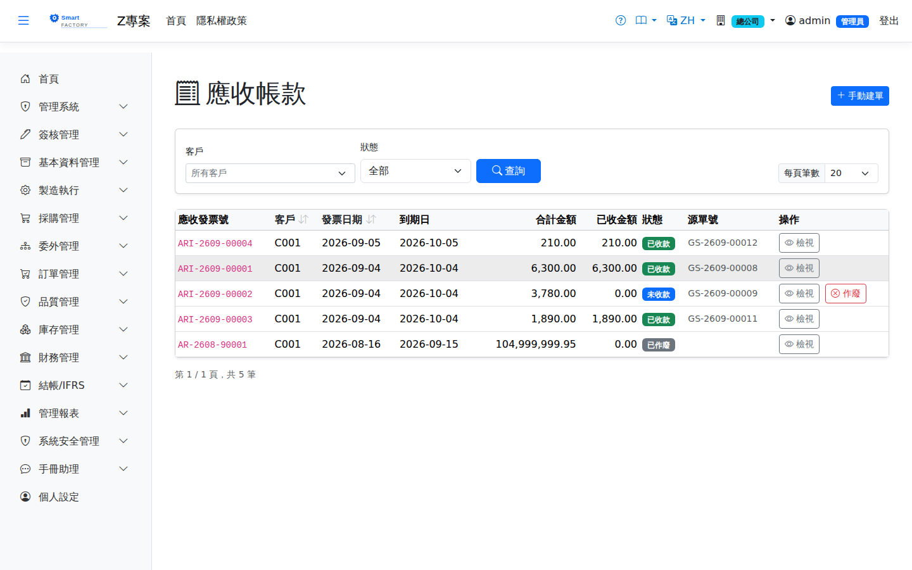

應收帳款AR Invoice
出貨單確認後自動產生應收發票，銷退沖減應收；亦可手開。經收款作業核銷後自動轉結清狀態。Confirming a shipment creates the AR invoice automatically, and a sales return offsets it; invoices can also be raised by hand. Once allocated in Receipts, the invoice moves to paid automatically.

查詢Search
單據狀態Status
| 狀態Status | 說明Guide |
|---|---|
| 未結清 OpenOpen | 尚未收付款或部分沖銷。Not yet paid or received, or only partly settled. |
| 部分沖銷 PartialPaidPartly paid | 已收付部分金額。Part of the amount has been paid or received. |
| 已結清 PaidPaid | 全額沖銷完畢。Fully settled. |
| 已作廢 VoidVoid | 發票作廢，不再列入應收付。The invoice is void and no longer counts as a receivable or payable. |
列印Printing
清單每列的 按鈕（需有列印權限）在新分頁開啟含 QR Code 的列印單，可直接列印或另存 PDF。發票列印含客戶名稱、到期日、幣別與匯率，以及各行品號、品名、數量、單位、單價、金額、稅別與稅額，並印未稅金額、稅額、含稅總額與本幣金額。The button on each row of the list (print permission required) opens a printout with a QR code in a new tab, ready to print or save as PDF. The invoice printout shows the customer name, due date, currency and exchange rate, and for each line the product code and name, quantity, unit, unit price, amount, tax code and tax, with subtotal, tax, total and local amount.
欄位說明Field reference
表頭Header
| 欄位Field | 說明Guide |
|---|---|
| 應收發票號AR Invoice No. | 系統採番，不可修改Numbered by the system; not editable |
| 客戶Customer | 應收發票的往來客戶Customer on the AR invoice |
| 發票日期Invoice Date | 發票開立日，決定入帳期間Invoice date, which decides the accounting period |
| 到期日Due Date | 應收款的期限；帳齡與逾期天數以此起算。由出貨自動產生時依客戶主檔的付款條件（結帳日＋收付款天數，見公司/廠商主檔）計算，未設定為單據日＋30 天；手動開立時自行填寫When the receivable is due; aging and days overdue are counted from it. When created automatically from a shipment, it is calculated from the customer's payment terms (closing day + credit days, see Company master); without terms it is document date + 30 days. Entered by hand on manual invoices |
| 狀態Status | 未結清／部分結清／已結清；由收款單核銷後自動更新Open / partly paid / paid; updated automatically once a receipt is allocated |
| 總金額Total amount | 發票的交易幣別含稅總額Total including tax in the invoice's transaction currency |
| 已收金額Received Amount | 累計已被收款單核銷的金額，不可手動修改Cumulative amount allocated by receipts; not editable |
| 本幣金額Local Amount | 總金額換算為本位幣的金額，帳務入帳與帳齡分析採此欄The total converted to local currency; the ledger and the aging analysis both use this column |
明細Lines
| 欄位Field | 說明Guide |
|---|---|
| 序號Seq | 明細行序Line seq |
| 品號Item | 出貨的料件Item shipped |
| 數量 / 單價Qty / Unit price | 出貨數量與未稅單價Shipped quantity and unit price excluding tax |
| 金額Amount | 數量 × 單價，未稅金額Quantity × unit price, excluding tax |
| 稅額Tax | 依稅別稅率計算的稅額Tax calculated from the rate of the tax code |
應收發票由出貨作業自動產生，明細對應出貨單的內容；金額不符時應回頭檢查出貨單而非直接改發票。AR invoices are created automatically by shipment and their lines mirror the shipment; if the amount looks wrong, go back and check the shipment rather than editing the invoice.
相關畫面Related screens
收款作業AR Receipt、應收帳齡分析AR Aging、出貨單Goods Shipment